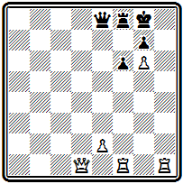

Е. И. УМНОВ
ШАХМАТНАЯ ЗАДАЧА XIX ВЕКА
Государственное издательство
«ФИЗКУЛЬТУРА и СПОРТ» Москва 1960
СОДЕРЖАНИЕ
Часть I. Зарождение современной шахматной задачи
Глава 1. Предыстория задачной композиции. (№1-№12)
Средневековые задачи-мансубы. Первые европейские композиции. Сборники «Цивис Бононие» и «Бонус социус». Задачи на пари
Глава 2. Подъем задачной композиции в Европе. (№13-№30)
Стамма и его сборник. Дель Рио и моденская группа. Композиторы начала ХIХ века; Зильбершмидт, Доллингер,
Глава 3. Формирование современных принципов. (№31-№54)
Возникновение периодической шахматной печати. Основоположники современной задачи - композиторы 40-х годов.
Д'Орвилль. Болтон. Бреде. Андерсен. «Индийская задача». Сборник Александра
Часть II. Основные центры европейской задачной композиции XIX века
Глава 4. Задачная композиция в Англии. (№55-№81)
Первые конкурсы составления задач. Йоркширская группа: Гримшоу, Тертон, Кидсон. «Д. Б. из Брайдпорта» — Джон Браун. Хили. Кзмпбелл.
Сборник «Английская шахматная задача»
Глава 5. Задачная композиция в Германии и Австрии. (№82-№ 000)
Чемпион международных конкурсов—Конрад Байер. Открытие новых идей. Новотный. Плахутта. Зеебергер.
Конкурсы Западногерманского шахматного союза
Глава 6. Задачная композиция во Франции. (№ 000-№ 000)
Международные конкурсы во Франции. Творчество французских композиторов. Аноним из Лилля — Эрлен. Ламуру. Гродеманж. Прадинья
Часть ///. Формирование национальных школ
Глава 7. Английская школа. (№ 000-№ 000)
Стили и школы. Принципы английской школы. Лоус. Плэнк. Сборник «Шахматная задача. Руководство с иллюстрациями».
Воплощение принципов английской школы в двухходовых и трехходовых задачах. Хискот. Тавернер. Мэкензи.
Глава 8. Немецкая школа. (№ 000-№ 000)
Котц и Коккелькорн. Клетт, Бергер и его книга «Шахматные задачи и искусство их составления». Принципы немецкой школы.
Конкурсы Германского шахматного союза. Венская группа проблемистов: Эрлин, Фейгль
Глава 9. Чешская школа. (№ 000-№ 000)
Кениг — основоположник чешской школы. Конкурсы журнала «Светозор». Добруский. Хохолоуш. Поспишил.
Сборник «Чешские шахматные задачи» и принципы чешской школы. Творчество чешских композиторов
Часть IV. Задачная композиция в других европейских странах и США
Глава 10. Распространение шахматной задачи в Европе. (№ 000-№ 000)
Задачная композиция в Голландии, Швеции, Дании, Венгрии, Италии, Швейцарии, Финляндии, Испании, Польше
Глава 11. Задачная композиция в США. (№ 000-№ 000)
Первые американские конкурсы. Кук. Чини. Сборник «Американские шахматные орешки». Лойд. Егo творческие взгляды и книга «Шахматная стратегия». Шинкман. Двухходовая задача в США
Часть V. Задачная композиция в России
Глава 12. Становление современной композиции в России. (№ 000-№ 000)
Пионер русской композиции . «Шахматный листок» ,
и отдел «Всемирной иллюстрации». Композиция в журналах . «Теория шахматных задач»
Глава 13. Подъем русской композиции в конце XIX века. (№ 000-№ 000)
. Композиция в «Шахматном обозрении» и «Шахматном журнале». Конкурсы составления задач.
Творческие искания русских композиторов. , его творчество и теоретические работы
Указатель задач по авторам
Указатель литературы
Корректировка задач
Практическую игру часто называют прозой, композицию—поэзией шахмат. И в этой сравнении много верного. О развитии задачной композиции в XIX веке, о людях, двигавших ее вперед, о лучших произведениях, которыми они обогатили сокровищницу шахматного искусства, рассказывает эта книга - Автор—мастер спорта, кандидат технических наук является одним из ведущих практиков и теоретиков советской задачной композиции. По широте охвата материала книга не имеет себе равных не только в нашей, но и во всей мировой литературе.
ОТ АВТОРА
Шахматная задачная композиция имеет многовековую историю. Она прошла длительный и сложный путь — от средневековых мансуб до задач наших дней. Важное место в этом процессе занимает XIX век. Именно в этом столетии были сформулированы основные художественные принципы задачной композиции, сделаны важнейшие открытия, продолжающие до сих пор питать творчество проблемистов, намечены основные творческие направления, сформировались первые задачные школы, которым предстояло развиваться и совершенствоваться в дальнейшем. В том же веке появилась периодическая шахматная печать, начались и широко внедрились конкурсы составления задач — все это послужило мощным стимулом для развития композиции. С ростом культурного обмена между отдельными странами композиция, первоначально развивавшаяся в небольшом числе европейских государств, широко распространилась по всему земному шару.
Истории шахматной задачи в XIX веке и посвящена настоящая книга. Материал расположен по отдельным странам в хронологическом порядке. Такая система позволит читателю воссоздать общую картину развития композиции в XIX веке и вместе с тем получить представление об основных школах и направлениях. В первую очередь рассмотрено развитие задачи в тех странах, в которых зародилась современная композиция и которые на протяжении всего столетия оставались ее основными центрами. Отдельно выделены данные, характеризующие формирование национальных школ, затем освещено развитие композиции в других странах Европы и США. В самостоятельный раздел выделены материалы о русской задачной композиции. В приложении дается список основных работ, относящихся к рассматриваемому в книге периоду, ссылки на них делаются по ходу изложения.
Уже на первых страницах книги читатель встретится с понятиями правильного, экономичного и чистого мата. Напомним, что мат называется правильным, если в нем участвуют все наличные фигуры белых (исключение возможно лишь для короля и пешек), а каждое поле матовой зоны недоступно королю только по одной причине — оно или занято своей фигурой или атаковано единственной вражеской фигурой. При выполнении только первого условия мат считается экономичным, только второго - чистым.
В работе над книгой ценную помощь автору оказали коллеги, участники I Международного конгресса композиторов в Пиране 1958 г.; автор выражает им искреннюю благодарность.
ЧАСТЬ 1
ЗАРОЖДЕНИЕ СОВРЕМЕННОЙ ШАХМАТНОЙ ЗАДАЧИ
Глава 1
ПРЕДЫСТОРИЯ ЗАДАЧНОЙ КОМПОЗИЦИИ
Средневековые задачи-мансубы. Первые европейские композиции. Сборники «Цивис Бононие» и «Бонус социус». Задачи на пари
Уже в самых ранних рукописях, оставшихся от той далекой поры, когда шахматы существовали еще в виде шатранджа, наряду со сведениями, относящимися непосредственно к игре, например, дебютными позициями — табиями, неизменно приводятся мансубы. Так назывались искусственно составленные положения, в которых одной из сторон ставится задание — достичь выигрыша или ничьей. Выходит, что шахматная композиция так же стара, как и сами шахматы.
До нас дошла, очевидно, лишь малая часть средневековых рукописных трактатов по шатранджу.
Подробное описание всех известных к тому времени манускриптов мы находим в капитальном труде по истории шахмат Мэррея (1). Наиболее древней из рассмотренных Мэрреем 29 восточных рукописей является анонимная «Книга о шахматах, выдержки из работ ал-Адли, ас-Сули и других», датируемая примерно 1140 годом.
После 1913 г.— даты выхода исследования Мэррея — было найдено еще несколько средневековых манускриптов. Особенно ценной находкой является описанная в 1951 г. Ф. Дюммелем и 3. Ходжаевым (2) рукопись таджикского шахматиста Сиджизи Абульфатха, относящаяся к XII, а может быть и XI веку.
На основании уцелевших манускриптов, а также содержащихся в них ссылок на более ранние, не дошедшие до нас источники, до последнего времени считалось, что автором наиболее древнего трактата является арабский шахматист ал-Адли, живший в IX веке. Однако у Абульфатха есть прямое указание на существование более ранней рукописи, принадлежащей таджикскому шахматисту VIII—IX веков Наиму ал-Хадиму.
0бщее количество мансуб, приведенных в рассмотренных Мэрреем манускриптах, достигает 1600. По исключении повторений, оно сокращается до 553. После открытия рукописи Абульфатха это число заметно вырастает: из 287 содержащихся здесь мансуб 127 не встречались ни в одном ранее известном манускрипте.
Первым «коллекционером» мансуб был ал-Адли. Большой сборник мансуб содержался в рукописи другого выдающегося арабского шахматиста ас-Сули (X в.). Упомянутая рукопись XII века позволяет восстановить эти коллекции мансуб ал-Адли и ас-Сули, ибо в ней все мансубы даны с указанием источника.
Как правило, авторы мансуб в дошедших до нас манускриптах не указаны. Исключение составляет рукопись выдающегося мастера XV века самаркандца Али Шатранджи, у которого все 60 мансуб даны с указанием авторов. 19 из них принадлежат самому Али Шатранджи, а среди других встречаются мансубы старых среднеазиатских мастеров — Зайраба (VIII в.) и Абдаллаха Хорезми (IX—X вв.). Приведены, в частности, две мансубы Абульфатха.
Первоначально мансубы возникли, вероятно, путем простого воспроизведения интересных положений, случившихся в игранных партиях. Затем подобные позиции стали создаваться искусственно. Решение мансуб доставляло удовольствие другим шахматистам. Оба «гроссмейстера» шатранджа — ал-Адли и ас-Сули — рекомендовали начинающим шахматистам упражняться в решении мансуб для совершенствования в игре.
Ал-Адли сделал попытку классификации мансуб. Он делил их на четыре группы: выигрышные, ничейные, неразрешимые и достопримечательные. У некоторых других авторов выделены в отдельную группу мансубы на выигрыш путем оголения короля противника. В рукописи Абульфатха использована несколько иная классификация. Прежде всего мансубы делятся на выигрышные и ничейные, затем выигрышные подразделяются по материалу: многофигурные (20 и более фигур), средние (10—20) и малофигурные (менее 10). Отдельно приводятся позиции с условным заданием и некоторые специальные типы мансуб, в частности мансубы, в которых в процессе решения король прогоняется по замкнутому кругу.
Деления мансуб на этюды и задачи не было. Задание обычно формулировалось так: белые (черные) выигрывают при своем ходе; белые (черные) выигрывают при ходе противника; ничья при ходе белых (черных). Следовательно, обязательного условия, чтобы выполнение задания осуществлялось белыми, не существовало. Число ходов решения обычно не указывалось. К некоторым мансубам приводилось несколько решений; одно из них бывало короче других.
Мансуб, которые с современной точки зрения можно было бы назвать этюдами, меньше, чем позиций, родственных по духу нынешним задачам. В них выигрыш достигается путем матования, а при указании числа ходов — единственным путем.
Переходя к иллюстрации мансуб-задач, напомним, что в шатрандже ферзь ходил только на соседнее поле по диагонали, слон — через поле по диагонали, пешка могла превращаться лишь в ферзя; выигрышем считалось достижение мата, пата, а также оголение короля.
Классическим образцом средневековой мансубы является позиция №1
№1
Наим VIII-IХвек

выигрыш
Жертвуя две фигуры, белые завлекают неприятельского короля в матовую сеть: 1. Kg5+ Л:g5 2. Лf6+ Кр:f6 3. Лd6# — чистый и экономичный мат. Эта позиция пользовалась широкой популярностью у современников — она воспроизведена во всех известных манускриптах, перешла в европейские средневековые сборники и встречается среди произведений Стаммы.
Еще более популярной была мансуба №2, также обошедшая всю литературу и даже в XIX веке вызывавшая многочисленные подражания. В манускриптах она иногда называется «девичьей задачей», чаще — «матом Диларам».
№2
«Мат Диларам»

выигрыш
С ней связывается следующая легенда. Диларам (что по-арабски означает «доброе сердце») была любимой женой некоего визиря. Однажды он играл в шахматы с сильным противником, проиграл ему все имущество и последней ставкой поставил Диларам. Дела сложились для него плохо: он должен был получить мат в следующий ход. В этот момент Диларам, наблюдавшая за игрой, воскликнула: «Пожертвуйте ваши обе ладьи, но спасите меня». Ее возлюбленный понял подсказанный план и одержал победу:
1. Лh8+ Кр:h8 2. Cf5+ Лh2 3. Л:h2+ Kpg8 4. Лh8+ Кр:h8 5. g7+ Kpg8 6. Kh6#.
Позиция №3, встречающаяся еще в коллекции ал-Адли, в более позднем манускрипте представляется как окончание партии между одним из визирей Мухаммеда II, завоевателя Константинополя, и послом персидского шаха.
№3
Из сборника ал-Адли IХ век

Выигрыш
Решение ее: 1. Л:с8+ Л:с8 2. Ле7+ Ф:е7 3. f7+ Kpd8 4. Ке6#.
Одной из излюбленных тем в мансубах-задачах было преследование вражеского короля, в результате которого он загонялся в заготовленную матовую сеть. В задаче №4
№4
Из рукописи Абульфатха XI-XII вв.

Выигрыш
черный король сначала прогоняется по верхнему краю доски до а8, а затем спускается на a1, где получает мат:
1. Лh7+ Kpg8 2. Лh8+ Кр:h8 (2... Kpf7 3. Kfe5#) 3. Фg7+ Kpg8 4. Kf6+ Kpf7 5. Ke5+ Kpe7 6. Cg5+ Kpd8 7. Kf7+ Kpc7 8. Ke8+ Kpb7 9. Kd8+ Кра6 (9... Kpa8 10. Kc7#) 10. Kc7+ Kpa5 11. Kb7+ Kpb4 12. Ka6+ Kpb3 13. Ka5+ Kpa2 14. Kb4+ Kpa1 15. Кb3#.
Особый интерес представляют мансубы, в которых после более или менее длительного преследования король получает мат на том самом поле, откуда он отправляется в путь.
Примером может служить диаграмма №5, где черный король доходит до поля е2, а затем снова возвращается на h7:
№5
Из сборника ас-Сули IХ век

Выигрыш
1. Фg7+ Kpg8 2. Лh8+ Kpf7 3. Лf8+ Кре6 4. Лf6+ Kpd5 5. Лd6+ Кре4 6. Лd4+ Kpf3 7. Лf4+ Kpe2 8. Лf2+ Kpd3 9. Cf1+ Kpe4 10. Лf4+ Крd5 11. Лd4+ Кре6 12. Лd6+ Крf7 13. Лf6+ Kpg8 14. Лf6+ Kph7 15. Лh8#.
Кстати, если заменить белого ферзя слоном и внести несущественные коррективы, то задача будет иметь одинаковое решение и по современным правилам. Именно в этом измененном виде задача была опубликована в 1843 г. в «Иллюстрейтид лондон ньюс» неким «корреспондентом из Константинополя» -

Мат в 15 ходов
Решение полностью совпадает с приведенным выше.
Еще горше участь матуемого короля в мансубах, образно называемых «водяным колесом». Здесь король, прежде чем получить мат, прогоняется вокруг всей доски, а иногда, как в позиции №6, даже дважды.
№6
«Водяное колесо»

Выигрыш
Мату конем с поля с6 мешает черная ладья с5. Чтобы ее устранить, белые отправляют вражеского короля в «кругосветное» путешествие:
1. Кb7+ Кре7 2. Кс8+ Kpf7 3. Кd8+ Kpg6 4. Кe7+ Kpg5 5. Кf7+ Kpf4 6. Кg6+ Kpf3 7. Кg5+ Kpe2 8. Кf4+ Kpd2 9. Кf3+ Kpc3 10. Кe2+ Kpb3 11. Kf:d4+ Kpa4 12. Кс3+ Кра5 13. Кb3+ Крb6 14. Ка4+ Крb7 15. Kb:с5+ Крс8 16. Кb6+ Kpd8 Теперь надо вернуть белого коня на а5 — король совершает второй круг: 17. Кb7+ Кре7 18. Кс8+ Крf7 19. Кd8+ Kpg6 20. Кe7+ Kpg5 21. Кf7+ Kpf4 22. Кg6+ Kpf3 23. Кg5+ Kpe2 24. Кf4+ Kpd2 25. Кf3+ Kpc3 26. Кe2+ Kpb3 27. Kf:d4+ Kpa4 28. Кс3+ Кра5 29. Кb3+ Крb6 30. Ка4+ Крb7, затем конь следует на а5 (31. Ka5+ Крс8) и после 32. Kb6+ Kpd8 объявляет мат 33. К:с6#.
Очень картинная задача. Еще одна версия «Водяного колеса» -

Мы видим, что в мансубах-задачах мат достигается форсированным путем, в результате серии последовательных шахов. Вместе с тем формируются и некоторые эстетические принципы (жертва основных сил, использование скрытых возможностей обороняющейся стороны и т. д.). Позиция мансубы должна быть возможной с точки зрения практической партии, соотношение сил — примерно равным. Очень часто король матующей стороны сам находится под угрозой мата. Таковы основные характерные черты мансуб средневекового Востока.
Почти все задачи, приводимые в первых европейских шахматных рукописях, были заимствованы из древних восточных источников. Новым было лишь появление нескольких типов условных задач, в которых требовалось объявить мат точно в указанное число ходов — ни раньше, ни позже.
Наибольший интерес представляют две латинские рукописи XIII века, составленные в Ломбардии и являющиеся сборниками шахматных задач с решениями и некоторыми комментариями. Авторы этих сборников, скрывшиеся под псевдонимами, остались неизвестными. Более обширный (288 задач) подписан «Цивис Бононие» — «Болонский гражданин», другой, задачи которого встречаются в подавляющем большинстве и в первом собрании,— «Бонус социус», то есть «Добрый товарищ».
В предисловии к последнему сборнику автор любопытно мотивирует причину его составления: «Вследствие первородного греха человеческая память весьма слаба; все, что не находится постоянно пред нашими глазами или о чем мы не думаем непрерывно, легко забывается. Это все равно, что сыпать песок в дырявый мешок. Помнить что-либо более свойственно богу, чем человеку... По сей причине я, «Бонус социус», уступая просьбам моих друзей, постарался собрать в этой книге все задачи, которые где-либо видел или в поте лица составил сам. Упражняясь в изучении сих задач, мои товарищи теперь смогут более легко делать новые задачи с различными комбинациями».
Оба сборника известны в нескольких списках. Так, Мэррей описывает 4 полных и 5 неполных текстов «Цивис Бононие». В 1950 г. итальянский композитор и историк шахмат Кикко опубликовал описание нового найденного им экземпляра «Цивис Бононие», содержащего значительно больше задач, чем известные до сих пор,— 533. Правда, среди них много повторений, так что новых позиций обнаружить не удалось.
В ломбардских сборниках подавляющее большинство задач условных, имеются даже позиции с отсутствующим белым королем, много задач неразрешимых — заданное условие в них не выполняется.
Объясняется это тем, что в ту пору большее распространение получили «задачи на пари». Предлагающий пари расставлял на доске позицию и объявлял задание, скажем мат в 2 хода черному королю. Принимающий пари мог по своему усмотрению выбрать ту или иную сторону, играть за белых или за черных, выполнять предложенное задание или опровергать его. Большое количество таких позиций, предлагавшихся на пари, и собрано в названных сборниках.
По мнению Мэррея, появление столь чуждых шахматам задач на пари объяснялось тем, что шахматная игра в силу медлительного характера, присущего шатранджу, стала нудной и неинтересной. В этом же причина того, что шахматная литература европейского средневековья ограничивалась почти исключительно коллекциями задач. Классическим примером задачи на пари служит позиция №7 представляющая собой концовку популярной арабской мансубы. Белого короля на доске нет.
№7
ЦивисБононие» 1300 г.

Мат в 2 хода
Мат в два хода достигается путем 1. Лf7+ К:f7 2. Kg6# . Предположим, вы выбрали сторону белых, решения не нашли и пари проиграли. Затем на доске появляется белый король на g5 и пари предлагается снова. Обрадованный решающий опять избирает сторону белых, но оказывается, что и на этот раз он пари теряет, так как после 1. Лf7+ ладья берется... с шахом. Следует новое превращение — белый король переставляется на h6. Кажется, ничего не изменилось, вы злорадно выбираете сторону черных, но... при положении короля на h6 белые выполняют задание — 1. Л:g7 K~ 2. Лf7#.
Указанные сборники интересны тем, что в них, хотя и в скромных размерах, представлено оригинальное творчество европейских шахматных композиторов. К числу новшеств относится форма задания, требующая анализа его выполнимости. Новым является и принцип построения задач. Сложные многофигурные и многоходовые восточные мансубы уступают место малофигурным задачам с небольшим числом ходов решения. Во многих случаях нет даже белого короля. На диаграмме №8 представлен пример условной задачи на пари, где требуется объявить мат точно в 2 хода.
№8
ЦивисБононие» 1300 г.

Мат точно в 2 хода
Белые могут сразу дать мат: 1. Лd7# или 1. Сb4#, но как этого добиться лишь через ход? Выжидательный тихий ход невозможен ввиду наличия угроз белому королю 1... С:f6+ или 1... Kf5+. Попытка 1. Крс4 опровергается новым шахом 1... Са6+. Решает только 1. Ле6+ С:е6 2. Сb4#. Перестановка белого коня f4 на с3 делает позицию неразрешимой: на 1. Ле6+ возможно 1... Кр:е6 и мата нет. Добавление в этой измененной позиции белого слона на b3 снова позволяет дать мат точно в 2 хода — красивым тихим ходом 1. Kpd3 с неотразимой угрозой 2. Ке4#.
В позиции №9 требуется дать мат точно в 4 хода.
№9
ЦивисБононие» 1300 г.

Мат точно в 4 хода
Из-за угроз белому королю тихие ходы невозможны, и сохранить готовую в начальном положении возможность мата в 2 хода не удается. Надо шаховать. Не ведет к цели 1. Ке7+ Кр:h7, так как немедленное превращение 2. g8Ф# матует раньше срока, а шах конем 2. Kg5+ позволяет неприятельскому королю ускользнуть от мата: 2... Kph6 (но не 2... Kph8 ввиду 3. Kf7+ Kph7 4. g8Ф#), и если 3. Kf7+, то 3... Kph5! К цели ведет только шах другим конем: 1. Kh6+ Кр:h7 2. g8Ф+ Кр:h6 3. Фg5+ Kph5 4. Kf4#.
Ортодоксальных задач в сборниках сравнительно мало. В числе их воспроизведены наиболее экономичные и малоходовые классические восточные мансубы.
Новый подъем шахмат, оставивший далеко позади достижения восточного шатранджа, относится к эпохе Возрождения. Он произошел во второй половине XVI — начале XVII века на юге Европы — в Италии, Испании и Португалии. Этому расцвету шахмат, связанному с общим подъемом культуры после эпохи средневековья, способствовало преобразование самих шахмат. Введение новых правил сделало игру значительно более живой и интересной и привело к ее широкому распространению. Однако задачная композиция отстала. Для нее период подъема наступил позднее.
С конца XV до начала XVII века появляется целый ряд шахматных руководств. Сюда относятся Флорентийская и Геттингенская рукописи конца XV века, названные так по месту отыскания или хранения — первые документы о новых правилах игры, печатные трактаты испанца Лусены (1497), португальца Дамиано (1512), итальянцев Сальвио (1604) и Греко (). Во всех этих работах, представляющих собой руководства по шахматной игре, отводится некоторое место и задачам. Наиболее полно композиция представлена в трактате Лусены, где помешено 150 задач. Половина их еще по старым правилам игры, другая половина — по новым. Обратимся к иллюстрациям.
Задача №10 — одна из многих, содержание которых навеяно «матом Диларам».
№10
Дамиано 1512 г.

Мат в 5 ходов
Белые жертвуют обе ладьи, чтобы освободить путь ферзю: 1. Лh8+ Кр:h8 2. Лh1+ Kpg8 3. Лh8+ Кр:h8 4. Фh1+ Kpg8 5. Фh7#.
Композиция №11 иллюстрирует матовую комбинацию с пожертвованием ферзя, известную под названием «мат Полерио»:
№11
Д. Полерио, конец ХVI века

Мат в 3 хода
1. Фh4+ Кр:h4 2. Kf3+ Kph5 3. Kf4#.
№12
А. Сальвио 1604 г

Мат в 10 ходов
Проблема №12 — пример редкой в тот период многоходовки. Белые дают мат в 10 ходов, причем в процессе решения делаются тихие ходы: 1. Лg7+ Крh8 2. Лh7+ Kpg8 3. Cd4 Лf6+ 4. С:f6 Ke5+ 5. С:е5 Kpf8 6. Kpf6 Kpg8 7. Лg7+ Kph8 8. Kpg6(f7) d1Ф 9. Лh7(g8)+ Kpg8(h7) 10. Лh8#.
Задачи, приведенные в упомянутых сборниках, по принципам построения близки к композициям «Цивис Бононие» и «Бонус социус», а то и просто воспроизведены из них, как, например, все 76 задач рукописи итальянца Гуаринуса (1512).
Глава 2
ПОДЪЕМ ЗАДАЧНОЙ КОМПОЗИЦИИ В ЕВРОПЕ
Стамма и его сборник. Дель Рио и моденская группа. Композиторы начала XIX века: Зильбершмидт, Доллингер
Новый этап в развитии заданной композиции связан с творчеством замечательного шахматиста XVIII века Филиппа Стамма. Родом сириец, обосновавшийся в Англии, Стамма в 1737 г. выпустил свою книгу (3), содержавшую 100 окончаний партий. Хотя в дальнейшем он расширил книгу добавлением дебютных позиций, однако наибольшую известность ему доставили именно его эндшпили. Сборник неоднократно переиздавался во Франции, Англии, Голландии, Германии, Австрии и Италии.
Все позиции Стаммы имеют задание: «Белые начинают и выигрывают». Около двух третей заканчиваются матом и по характеру решения являются задачами. По соотношению материала — большое количество фигур при более или менее равных силах у обеих сторон — это типично миттельшпильные позиции. Короли, как правило, находятся на исходных горизонталях, причем белому королю грозит непосредственный мат. Решение форсированное и состоит в разрушении защитного прикрытия короля. По стилю построения позиции Стаммы весьма близки к восточным мансубам.
Позиция №13 показательна для Стаммы -
№13
Ф. Стамма 1737 г

Мат в 8 ходов
Материальное равенство, естественная позиция из середины игры, белому королю грозит мат, король черных надежно укрыт. И все таки жертвой нескольких фигур белые взламывают неприятельскую позицию и дают мат:
1. С:с7+ Л:с7 2. Ф:а7+ Кр:а7 3. Ла1+ Крb8 4. Ла8+ Кр:а8 5. Кb6+ Крb8 6. Лd8+ Лс8 7. Л:с8+ Кра7 8. Ла8#.
По тем же принципам построена задача №14:
№14
Ф. Стамма 1737 г

Мат в 9 ходов
1. Cf4+ Кра8 2. Кb6+ аb 3. Ла1+ Ка6 4. Л:а6+ ba 5. Cg2+ Kpa7 6. Ф:b6+ Кр:b6 7. Kd7+ Kpa7 8. Се3+ Лс5 9. С:с5#.
Здесь жертвы коня, затем ферзя и ладьи имели целью вскрыть линии для форсированного введения в бой новых сил белых.
В рассмотренных примерах черный король не покидал свой лагерь и получал мат после уничтожения окружающих его сил.
В позиции №15 белые добиваются цели путем «извлечения» короля из-за укрытия:
№15
Ф. Стамма 1737 г

Мат в 7 ходов
1. Ле8+ Крb7 2. Фа6+ Кр:а6 3. К:с7+ Кра5 4. b4+ Кра4 5. Cd1+ Фс2+ 6. С:с2+ Кра3 7. Кb5#. Попытка отказаться от принятия жертвы ферзя 2... Крс6 не спасает: 3. Kb4+ Kpd6 4. ФdЗ+ Крс5 5. Фd5#.
Свежую мотивировку жертвы фигуры - для развязывания белой пешки мы находим в примере № 16.
№16
Ф. Стамма 1737 г

Мат в 6 ходов
После 1. Лa7+ Kpg6 2. Лg7+ Kph5 3. Лh4+ Кр:h4 белые отвлекают черного слона с диагонали е4-h1 и развязывают свою пешку: 4. Kf5+ С:f5 (4... Kph5 5. Kf4#) 5. g3+ Kp:h3 6. Kf4#.
В задаче №17 вступительная жертва ладьи тонко обоснована выигрышем темпа.
№17
Ф. Стамма 1737 г

Мат в 4 хода
Сразу играть 1. Кb6+ нельзя из-за 1... Kpd8. Надо предварительно перевести слона на d6, а чтобы сделать это с темпом, жертвуется ладья: 1. Лb8+ Кр:b8 2. С:d6+ Крс8 и теперь уже 3. Кb6+ Kpd8 4. Сс7#.
Позиция № 18 представляет собой редкое исключение среди задач Стаммы - в ней есть тихий ход -
№18
Ф. Стамма 1737 г

Мат в 11 ходов
1. Kd7+ Л:d7 (1... С:d7 2. Фс7+ К:с7 3. bа+ Кра8 4. К:с7#) 2. Фе5+ Ф:е5. Теперь белым мат не грозит и потому — 3. Л:а7 с неизбежным матом на а8: 3... Кс7 4. bc+ Л:с7 5. Ла8# , который черные могут лишь отсрочить, пожертвовав все тяжелые фигуры (3... Ф:g3 4. fg и т. д.).
Сравнивая задачи Стаммы с позициями из с Цивис Бононие», Уайт заключил, что первые представляют собой шаг назад, поскольку место изящных, экономичных позиций с коротким выразительным решением у сирийца снова заступают громоздкие позиции и многоходовые форсированные решения средневековых мансуб. Л. Уайт объяснял это утратой преемственности, тем, что задачи средневековых сборников не были известны Стамме.
При этом, однако, упускается из виду, что задачи на пари, возникнув в противовес реальной шахматной партии, носили искусственный характер. Напротив, творчество Стаммы явилось откликом на потребности обновленной шахматной игры. Все задачи Стаммы — типичные матовые комбинации середины партии, в них наличествуют характерные элементы современных комбинаций. Работы Стаммы не шаг назад, а поворот к реальной шахматной игре от условных задач на пари европейского средневековья. Как древние мансубы возникли в период расцвета восточного шатранджа, так и задачи Стаммы отразили подъем новых европейских шахмат.
Творчество Стаммы явилось плодотворным, но не единственным и даже не главным направлением в развитии композиции. В том же XVIII веке вскоре после Стаммы выступили со своими произведениями три итальянских шахматиста: Эрколе дель Рио, выступавший под псевдонимом «Аноним из Модены», и два его земляка — Джамбатиста Лолли и Доменико Лоренцо Понциани, которые в своих работах существенно отошли от принципов Стаммы. Особенно успешным было творчество дель Рио. Задачи этих трех итальянцев помещены в их книгах о шахматах, выпущенных в середине XVIII века (4—6).
Позиция № 19 необычна для того времени уже по построению: материал сравнительно невелик, угроза мата белому королю отсутствует. Но еще более необычно решение:
№19
Э. дель Рио 1750 г

Мат в 4 хода
1. Фа6! — тихий ход, жертвующий ферзя. Грозит мат на b7. Брать ферзя нельзя 1… ba из-за 2. Сс6#, единственная защита 1... Лb8.
Снова следует тихий ход, жертвующий фигуру: 2. Сс6 с возобновлением угрозы на b7. Опять черным остается лишь усилить оборону этого поля путем 2... Фс8, но теперь следует матовая комбинация: 3. Ф:а7+ Кр:а7 4. Ла1#. Уже в этой задаче отразились основные черты стиля дель Рио: естественность начальной позиции, изящество матовой комбинации, небольшое число ходов решения.